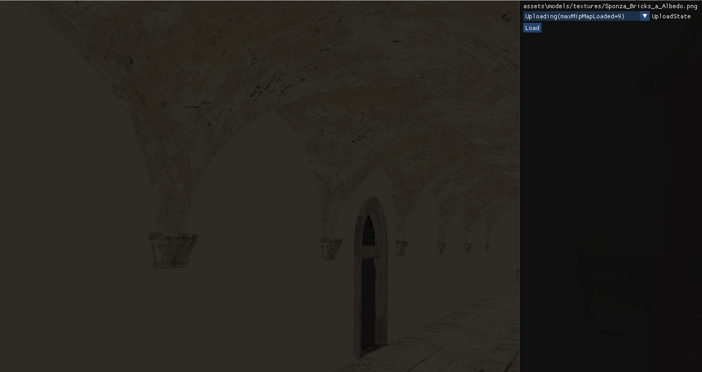
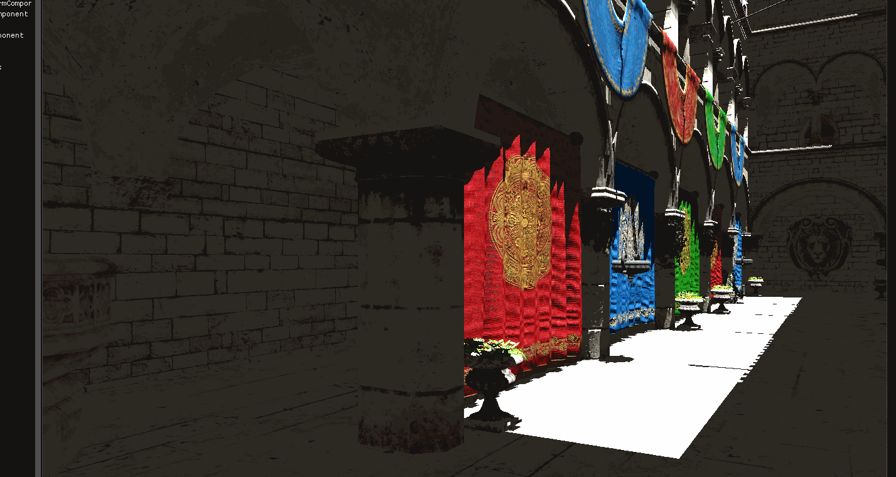

Persistent buffers for asynchronous texture uploads
It's been a while since I learned about persistent mapped gpu buffers and how they can be used to make multithreaded game engines and I wrote about it here. Lately, I wanted to reactivate - or rather properly implement - texture streaming in my custom game/rendering engine, because inefficient and unresponsive resource loading bothers me a lot when toying around.
So there is this idea to use an OpenGL unpack buffer that is set up with GL_MAP_PERSISTENT_BIT and GL_MAP_COHERENT_BIT (actually or :P), which frees us from ever mapping it and which makes writes to the buffer done by the CPU immediately visible to the gpu.
When the upload is finished, we can just bind the unpack buffer and call glCompressedTextureSubImage2D or glTextureSubImage2D and pass the target texture ids as first parameter - so there's no need to bind the texture with the new apis. Binding an unpack buffer will make the two subImage calls use the buffer as a source for the texture data. Since the data was already uploaded, the call should be really fast. And indeed, the calls I measured (with a proper signal of course) took about 0.003ms, no matter what texture size was copied:
result ms: 0.002048
result ms: 0.003072
result ms: 0.003072
result ms: 0.002048
result ms: 0.002048
result ms: 0.003072
result ms: 0.003072
Like described here, we create a sync object after the api call and and wait until the issued commands are complete. After that, the pinned buffer can be used for the next upload.
What does it give us? The upload to the persistent buffer blocks the current thread (or rather waiting for the api calls to be finished) - but when outsourced to an IO threadpool, it's not that of a big deal. That's exactly the same you would get with regular pixel buffer object usage. But with the latter, you would need to map and unmap the buffer, which causes driver and api overhead. Allthough I didn't measure it for this particular case, other examples show a significant performance benefit. For a texture streaming system that constantly unloads and reloads texture data, that might also be beneficial.
What about mipmaps
Normally, your game would use precomputed mip maps for textures and a gpu friendly format, such as ddx. Well, I am using a lot of models for dumb tests that don't come with ddx textures, but rather png or jpeg. Normally, an engine would preprocess such textures and precompute mipmaps - for my testing purposes, it's more handy to just generate them in-engine on the fly. But when the gpu does it with glGenerateMipmap, it takes roughly 30ms per call, resulting in horrible hitches during editor usage or game play time. Not accepatble. Since my engine uses the JVM, it's easy to downscale textures with
// https://stackoverflow.com/questions/9417356/bufferedimage-resize
fun BufferedImage.resize(targetSize: Int): BufferedImage {
require (targetSize > 0) { "Don't pass in 0 targetSize" }
var targetWidth = targetSize
var targetHeight = targetSize
val ratio = height.toFloat() / width.toFloat()
if (ratio <= 1) { //square or landscape-oriented image
targetHeight = ceil((targetWidth.toFloat() * ratio).toDouble()).toInt()
} else { //portrait image
targetWidth = (targetHeight.toFloat() / ratio).roundToInt()
}
return BufferedImage(
targetWidth,
targetHeight,
if (transparency == Transparency.OPAQUE) BufferedImage.TYPE_INT_RGB else BufferedImage.TYPE_INT_ARGB
).apply {
createGraphics().apply {
setRenderingHint(
RenderingHints.KEY_ALPHA_INTERPOLATION,
RenderingHints.VALUE_ALPHA_INTERPOLATION_QUALITY
)
setRenderingHint(
RenderingHints.KEY_INTERPOLATION,
RenderingHints.VALUE_INTERPOLATION_BICUBIC
)
drawImage(this@resize, 0, 0, targetWidth, targetHeight, null)
dispose()
}
}
}
fun BufferedImage.toByteBuffer(): ByteBuffer {
val width = width
val height = height
val pixels = IntArray(width * height)
getRGB(0, 0, width, height, pixels, 0, width)
val buffer = BufferUtils.createByteBuffer(width * height * 4) // 4 because RGBA
for (y in 0 until height) {
for (x in 0 until width) {
val pixel = pixels[x + y * width]
buffer.put((pixel shr 16 and 0xFF).toByte())
buffer.put((pixel shr 8 and 0xFF).toByte())
buffer.put((pixel and 0xFF).toByte())
buffer.put((pixel shr 24 and 0xFF).toByte())
}
}
buffer.flip()
return buffer
}
and just upload mipmap after mipmap with the technique described above. This way, your cpu can take it's time to precaclulate the mipmaps asynchronously without blocking anything important, upload it with dma and use a small fraction of the gpu frame budget to actually set the texture data, like:
fencedOnGpu { // This creates a fence and blocks until commands finished
buffer.bind() // the persistent buffer is bound, so that the following calls use it as a source
glCompressedTextureSubImage2D(
texture.id,
level,
0,
0,
width,
height,
info.internalFormat.glValue,
data.capacity(),
0 // now this is the offset into the pixel buffer object
)
// unbind the buffer, or further calls to textureSubImage2D will accidentally use it, global state, yay
buffer.unbind()
}
In my case, I use a sizeable pool of pixel buffer objects and for each one a corresponding lock, in order to prevent parallel usage of the same buffer object by the cpu. It would be possible to use multiple differently sized backing buffers (for more efficient vram usage), but I didn't implement that.
Next, one ususally needs a mechanism to prioritize multiple concurrent texture or mipmap uploads: textures used on objects near the camera have higher prio than textures used far away. On the other hand, having at least the highest mipmap loaded can be desired, so that one doesn't have to fallback to a static color for the appearence of an object. My current fallback is a default texture (the colored chess pattern) and texture streaming (artificially slowed down a few hundrets miliseconds per mipmap) looks like:

I also implemented a simple priority queue that preferably loads the higher mipmaps. Using an appropriate bias results in the well known sharpening textures we know from a lot of games:

Note how all objects show at least a low res texture as soon as possible until the higher resolutions are loaded in.
There are still some hitches and stuttering in my engine and I have yet to investigate where they come from (I suspect not from the gpu load or graphics api usage). As always, time is up before everything's done and the leftovers are: 1) save precalculated mipmaps to disk, so that they are somewhat cached for the next time. Currently, the full resolution image needs to be loaded in order to calculate all the mipmaps from it. 2) Use the new lazy loading for mipmaps of dds images as well. 3) Remove all stuttering and make it a true streaming solution. And of course 4) Change the priority queue so that it takes into account the distance to the object using a texture and not only the mipmap level.